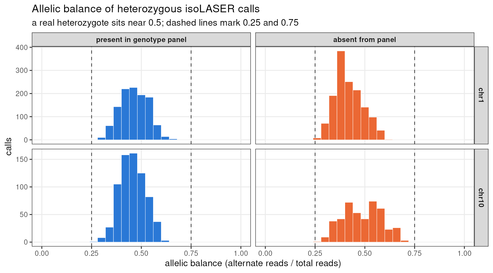

This reproducible R Markdown
analysis was created with workflowr (version
1.7.1). The Checks tab describes the reproducibility checks
that were applied when the results were created. The Past
versions tab lists the development history.
Great job! The global environment was empty. Objects defined in the
global environment can affect the analysis in your R Markdown file in
unknown ways. For reproduciblity it’s best to always run the code in an
empty environment.
The command set.seed(20260908) was run prior to running
the code in the R Markdown file. Setting a seed ensures that any results
that rely on randomness, e.g. subsampling or permutations, are
reproducible.
Tracking code development and connecting the code version to the
results is critical for reproducibility. To start using Git, open the
Terminal and type git init in your project directory.
This project is not being versioned with Git. To obtain the full
reproducibility benefits of using workflowr, please see
?wflow_start.
Most calls that the genotype panel can assess have the
correct alternate allele, but exact genotype agreement is
lower. The main discrepancy is a panel heterozygote called
homozygous-alternate by isoLASER, especially at low read depth. Calls
absent from the panel remain unvalidated.
Comparison and counting
We compared 24 Nanopore-model runs: chr1 and chr10,
four donors (CD_21, CD_31, CD_36 and CD_48), and three timepoints (0, 1
and 6 hours). The reference is the 100-line TOPMed-imputed genotype
panel. Its GRCh38 coordinates and donor names were checked before
comparison.
The analysis includes PASS SNVs with at least 10 reads. Duplicate
gene-level records are collapsed within each run, keeping the deepest
record. A call is one donor × timepoint × genomic
variant; the same variant observed in several samples contributes
several calls. The 11,573 calls span 3,191 distinct variants. We use
call-level counts below because genotype agreement is
donor-specific.
How much does the panel confirm?
A call is adjudicable when the panel has a donor
genotype at its position and site-level imputation R² ≥ 0.8.
Confirmation additionally requires the same reference and alternate
alleles and a non-reference panel genotype. Exact agreement also
requires matching heterozygous/homozygous status.
Measure
Count
Denominator
PASS SNV calls
11,573
Calls at a panel position
5,261
45.5% of all calls
Adjudicable calls
4,710
Panel position and R² ≥ 0.8
Alternate allele confirmed
4,575
97.1% of adjudicable calls
Exact genotype agreement
3,222
68.4% of adjudicable calls
Of the 4,710 adjudicable calls, 134 have a
homozygous-reference panel genotype and one has a different alternate
allele. The latter is chr1:23,344,310 in CD_48 at 1 hour:
isoLASER calls G>T, while the panel record is G>C. It is excluded
from both confirmation counts above.
Results by chromosome and timepoint (four donors combined)
Chromosome
Time
Calls
In panel
Adjudicable
Allele confirmed (%)
Exact genotype (%)
chr1
0hr
2282
884
769
97.0%
66.6%
chr1
1hr
2719
1261
1108
96.4%
65.1%
chr1
6hr
2710
1378
1219
97.5%
67.7%
chr10
0hr
1008
434
403
97.8%
73.9%
chr10
1hr
1452
658
609
97.4%
72.1%
chr10
6hr
1402
646
602
97.2%
70.9%
Column guide
Chromosome / Time: chromosome and time after
stimulation; each row combines the four donors.
Calls: number of PASS SNV calls with at least 10
reads, after collapsing duplicate gene-level records within each donor
and timepoint. A site called in two donors counts twice.
In panel: calls whose genomic position has a
genotype for that donor in the reference VCF, regardless of imputation
quality or allele agreement.
Adjudicable: the subset of “In panel” with
imputation R² ≥ 0.8. This is the denominator for both percentage
columns.
Allele confirmed (%): 100 × calls with matching
reference/alternate alleles and a non-reference panel genotype ÷
adjudicable calls. Heterozygous versus homozygous-alternate differences
are allowed.
Exact genotype (%): 100 × calls with matching
alleles and matching heterozygous/homozygous status ÷
adjudicable calls. Phasing orientation is not compared.
For example, a panel genotype of 0/1 and an isoLASER
genotype of 1/1 for the same alternate allele
contributes to “Allele confirmed” but not “Exact genotype.”
Main discrepancy: heterozygotes called homozygous
Among allele-matched, adjudicable calls where the panel is
heterozygous, 1,321 of 2,983 (44.3%) are called
homozygous-alternate by isoLASER. This discrepancy is more frequent at
low depth:
Read depth
chr1
chr10
10–14
89.9%
90.2%
15–19
71.7%
74.5%
20–29
59.2%
41.1%
30–49
28.5%
31.9%
50–99
19.7%
15.1%
100+
14.9%
8.1%
The discrepant calls have a median alternate-read fraction of about
0.58, so loss of all reference-allele reads does not explain the typical
case. This association warrants checking the genotype-calling logic and
running both error models on the same donor, chromosome and
library. Raising the depth threshold removes many discrepant
calls but also removes usable sites; filtering outputs alone cannot
restore heterozygotes omitted from the original phasing.
Calls absent from the panel
The panel has no record for 6,312 calls. Their
accuracy cannot be determined from this comparison. The imputed panel
does not cover all variants, while RNA sequencing and alignment can also
introduce artifacts.

Alternate-read fraction among isoLASER calls labeled
heterozygous, split by panel overlap.
These histograms include only calls isoLASER labels heterozygous.
Their balanced allele fractions are a useful diagnostic, but are
conditional on that label and do not independently validate off-panel
calls. RNA allele fractions can also be affected by allele-specific
expression.
Interpretation and source data
The evidence supports high alternate-allele confirmation
within the adjudicable subset, with substantial genotype
discordance at shallow sites. Both confirmation and exact-genotype
agreement should be reported, particularly because phasing depends on
heterozygous sites. This analysis does not estimate sensitivity: it
starts from isoLASER calls and does not count known variants that
isoLASER missed. The comparison panel is imputed, so it is not an
error-free truth set.
The call-level
comparison table contains donor, timepoint, alleles, depth and panel
genotype. Counts on this page are calculated from that table and require
allele agreement. The underlying analysis is in
8.isolaser_validation/11.validate_chrom_timepoint.R; its
position-based matching should also be updated before regenerating the
original summary assets.